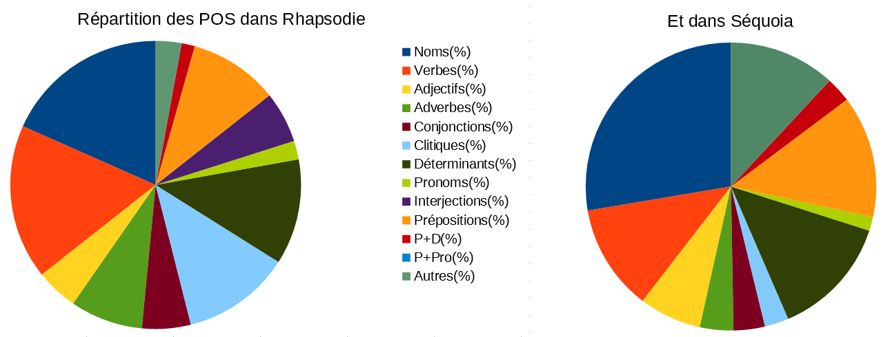

\( ^o^)/ Présentation du projet
L'objectif de ce projet est d'analyser les ressemblances et les divergences de plusieurs corpus annotés du français, notamment
les écarts entre la langue orale et la langue écrite. Les corpus textuels sont des collections de documents variés, censés
représenter la langue dans un contexte particulier. L'analyse de ces textes à l'aide d'annotations et d'un format structuré
permet de mettre à jour leurs caractéristiques et ainsi de faire émerger, notamment à l'aide de visuels et de traitements
variés (transformations XSL, requêtes Xquery), des similitudes ou, au contraire, des ruptures.
Problématique : Écrit VS Oral
La problématique de notre projet consistera à faire transparaître, à l'aide de vastes jeux de données, les divergence
et ressemblances entre les textes oraux et écrits. Souvent moins traités dans l'analyse de corpus, l'oral va présenter des
caractéristiques singulières qu'on ne retrouve généralement pas à l'écrit, c'est ce que nous tenterons de présenter. Enfin,
on dénote également des éléments spécifiques aux textes écrits, nous verrons comment ils se manifestent dans le corpus, en
comparaison des textes oraux.
Particularités des jeux de données textuelles...
Contrairement à des jeux de données « classiques » comportant des données numériques (statistiques, informations géospatiales),
les données textuelles n'offrent pas d'informations a priori. Une annotation sous forme de métadonnées et un prétraitement
des textes sont donc nécessaires pour pouvoir effectuer une analyse plus fine des données.
Étapes du projet
Notre projet se divise en plusieurs étapes. Tout d'abord, nous passons par une phase de prétraitement des fichiers contenant
les corpus annotés, afin de créer une structure de données au format XML, destinées à l'analyse et à l'évaluation. Nous utilisons,
pour ce faire, plusieurs scripts en Python. Le format XML offre de nombreux avantage, notamment grâce aux langages de requêtes
permettant de tirer partie des métadonnées et de la structure des données pour pouvoir effectuer des opérations de traitement
sur l'ensemble d'un corpus. Cette structure permet également d'obtenir un contenu uniforme, facile à parcourir et à étudier.
Une fois les corpus bruts prétraités, la deuxième tâche consiste à analyser les fichiers structurés obtenus grâce à un ensemble
de requêtes et de traitements afin d'effectuer des comparaisons et diverses visualisations. Enfin, nous stockons les visuels
obtenus dans un tableau, afin d'accéder facilement au résultats des traitements finaux. La présente page de présentation et
la page contenant le tableau sont également réalisées à partir de fichiers XML.
Schéma du processus de transformation
Retour au menu
\( ^o^)/ Corpus
Pour notre projet, nous sommes parti de l'analyse de deux corpus principaux, un premier regroupant exclusivement des extraits
de langue orale (corpus Rhapsodie), et un second composé intégralement de documents écrits (corpus Sequoia).
Corpus Sequoia
--------------
-
-
Nom :
Deep Sequoia corpus
-
-
Source :
https://deep-sequoia.inria.fr/fr/
-
-
Taille (octets) :
11,2 Mo
-
-
Échantillonnage et genre :
corpus de langue française annoté, intégrant des informations sur les dépendances syntaxiques de surface et profonde des
mots, ainsi que leurs catégories grammaticales (arbres syntaxiques ou treebank) au format UD (CoNLL-u)
-
-
Modalité :
écrit, documents provenant d'Europarl, du corpus l'Est Republicain, des pages Wikipédia de la communauté France, et de l'agence
européenne du médicament.
-
-
Taille :
environ 3200 phrases
-
-
Annotations et outils :
annotation manuelle des catégories morpho-syntaxiques et de la structure syntagmatique en suivant les consignes d'annotation
du French Treebank ; convention de transcription du corpus : https://deep-sequoia.inria.fr/deep-sequoia-guide.pdf
-
-
Documentation :
corpus issu des travaux réalisés par les équipes de l'INRIA, du LLF, du LORIA et du LabEx EFL. Articles de référence :
- Marie Candito, Guy Perrier, Bruno Guillaume, Corentin Ribeyre, Karën Fort, Djamé Seddah and Éric de la Clergerie. (2014) Deep
Syntax Annotation of the Sequoia French Treebank. Proc. of LREC 2014, Reykjavic, Iceland.
- Guy Perrier, Marie Candito, Bruno Guillaume, Corentin Ribeyre, Karën Fort and Djamé Seddah. (2014) Un schéma d'annotation
en dépendances syntaxiques profondes pour le français. Proc. of TALN 2014, Marseille, France.
- Marie Candito and Djamé Seddah. (2012) Le corpus Sequoia : annotation syntaxique et exploitation pour l'adaptation d'analyseur
par pont lexical, Proceedings of TALN'2012, Grenoble, France
-
-
Licence et droit d'utilisation :
Licence LGPL-LR (Lesser General Public License For Linguistic Resources). Mention de l'article : Candito M. and Seddah D.,
2012 : "Le corpus Sequoia : annotation syntaxique et exploitation pour l'adaptation d'analyseur par pont lexical", Actes de
TALN'2012, Grenoble, France
-
-
Extrait : "cette exposition nous apprend [...]"
1 Cette ce D DET g=f|n=s|s=dem 2 det _ _
2 exposition exposition N NC g=f|n=s|s=c 4 suj:suj _ _
3 nous le CL CLO n=p|p=1|s=obj 4 a_obj:a_obj _ _
4 apprend apprendre V V dl=apprendre|dm=ind|m=ind|n=s|p=3|t=pst 0 root _ _
Corpus d'origine complet
Corpus XML après traitement
Corpus Rhapsodie
--------------
-
-
Nom :
Corpus Rhapsodie, version annotée en microsyntaxe
-
-
Source :
https://www.projet-rhapsodie.fr/
-
-
Taille (octets) :
3,8 Mo
-
-
Échantillonnage et genre :
corpus de français parlé annoté pour la prosodie et la syntaxe, intégrant des informations sur les rections, dépendances (arbres
syntaxiques ou treebank) et catégories grammaticales au format tabulaire
-
-
Modalité :
oral, échantillon de 30 heures de parole, regroupant des transcriptions d'interview, de parole libre, de commentaires sportifs,
etc. issus d'une compilation de corpus externes et internes au projet
-
-
Taille :
retranscription de 30h de parole
-
-
Annotations et outils :
annotation manuelle des dépendances syntaxiques sur 6h de parole à l'aide du logiciel d'édition Arbil (format IMDI), guide
d'annotation utilisé : www.projet-rhapsodie.fr/wp-content/uploads/2017/04/Protocole-de-codage-microsyntaxique-2013-10-1.pdf
-
-
Documentation :
corpus annoté issus des travaux réalisés par les équipes de MODYCO, de l'IRCAM, du LATTICE, de l'ERSS et du LPL. Lien vers
les publications : https://www.projet-rhapsodie.fr/bibliographie/
-
-
Licence et droit d'utilisation :
Licence Creative Commons Attribution, citation des sources des corpus dans le respect des propriétés intellectuelles selon
qu'il s'agisse de corpus externe ou interne
-
-
Extrait : "est-ce [...]"
D0001 1 1 est $L1 B est être V indicative present 3 sg 0 root 0 root O B B O O O O O O O O O O O B mml2 B lone-dis-strong hmm2 B dis-strong hmm2 B dis-strong hmm2 B Hh 0 0 2.2265 2.2665 189.99999999999994 114.99999999999999 97.16526451681739 95.04111744094945
D0001 1 2 - $L1 B -ce ce Cl 3 sg masc 1 sub 1 sub O I I O O O O O O O O O O O I mml2 I lone-dis-strong hmm2 I dis-strong hmm2 I dis-strong hmm2 I Hh 0 0 2.2665 2.4165 189.99999999999994 114.99999999999999 97.16526451681739 95.04111744094945
Fichier du corpus d'origine
Corpus XML après traitement
Questions d'harmonisation...
Afin de pouvoir comparer les deux corpus principaux sur un pied d'égalité, nous avons, au moment du traitement, décidé d'harmoniser
l'étiquetage utilisé dans les sorties XML. Par souci de simplicité, nous avons conservé l'étiquetage du corpus Sequoia. Nous
avons également dû faire quelques ajustement, notamment la fusion d'étiquettes comme les conjonctions (en bleu dans le tableau
récapitulatif). Nous avons également regroupé certaines étiquettes n'apparaissant pas dans l'un ou l'autre des corpus. C'est
notamment le cas des étiquettes « emprunt », « ponctuation » et « préfixe », présentes dans le corpus Sequoia, mais absente
du corpus Rhapsodie, et des étiquettes « inconnu » et « interrogatifs/relatifs » qui, à l'inverse, étaient présentes dans
le corpus Rhapsodie mais inutilisée dans le corpus écrit Sequoia (en rouge dans le tableau récapitulatif).
Tableau récapitulatif : harmonisation des catégories grammaticales
| Rhapsodie |
Sequoia |
Signification |
|
|
|
|
|
|
| Adj |
A |
adjectif |
|
|
|
| Adv |
ADV |
adverbe |
|
| CS |
C |
conjonction |
|
|
|
| J |
--- |
conjonction |
|
|
|
|
|
| Cl |
CL |
clitique |
|
|
|
| D |
D |
déterminant |
|
|
| --- |
ET |
emprunt |
|
|
|
|
| I |
I |
interjection |
|
|
|
| N |
N |
nom |
|
|
|
| Pre |
P |
préposition |
|
|
|
| Pre+D |
P+D |
prép.+dét. |
|
|
|
| Pre+Qu |
P+PRO |
auquel/lequel |
|
|
| --- |
PONCT |
ponctuation |
|
|
|
| --- |
PREF |
préfixe |
|
|
|
|
| Pro |
PRO |
pronom |
|
|
|
| V |
V |
verbe |
|
|
| X |
--- |
inconnu |
|
|
|
| Qu |
--- |
interrogatifs/relatifs |
|
Retour au menu
\( ^o^)/ Scripts
Pour passer la première étape de transformation des fichiers bruts en fichiers XML, nous avons eu recours à des scripts de
conversion en Python. Le but de ces scripts est de traiter les données au format tabulaire des corpus annotés, afin de produire
des fichiers harmonisés et exploitables. Compte tenu des différences de format des deux corpus principaux, nous avons dû créer
deux scripts distincts.
Les deux corpus utilisant une structure de type treebank, nous avons choisi de partir sur une représentation en arbres
syntaxiques, correspondant chacun aux phrases et syntagmes des documents du corpus. Chaque arbre syntaxique est lui-même composé
de tokens que nous avons balisé comme tel dans le fichier XML. Les catégories grammaticales (ou POS, "Part of Speech") ont
quant à elles été représentées à l'aide de paramètres au sein des balises. Nous avons également ajouté un niveau hiérarchique
supplémentaire « mot », étant donné qu'un même mot peut être composé de plusieurs tokens, selon les règles d'annotation du
corpus Rhapsodie.
La première partie du script consiste à analyser la structure des données de départ, afin de pouvoir les lire et les
récupérer. Une fois le fichier parcouru et les données analysées, la deuxième étape consiste à créer un fichier de sortie
pour les stocker respectant une grammaire XML donnée. Nous avons décidé, afin de conserver un format homogène, d'utiliser
une grammaire unifiée pour les deux fichiers XML en sortie au format DTD. Les scripts créés ne nécessitent pas d'installation
de bibliothèques particulières et peuvent être utilisés directement sur les corpus bruts.
Lien vers les scripts
Script Sequoia > XML
Script Rhapsodie > XML
Retour au menu
\( ^o^)/ Tableau
Après avoir balisé et converti les données des fichiers, nous avons effectué plusieurs requêtes sur les fichiers XML produits,
afin de comparer le résultat des deux corpus. Nous résumons les résultats analyses sous formes de tables et autres visualisations
au sein d'un même tableau. Nous avons notamment cherché à mettre à jour les principales différences entre les deux corpus,
telles que les catégories grammaticales majoritaires, ou encore certaines caractéristiques spécifiques, telles que la surabondance
de clitiques ou de déictiques, ou encore la richesse du vocabulaire.
Tableau
Retour au menu
\( ^o^)/ Résultats d'analyse
Nous présentons ci-après plusieurs résultats de nos analyses après conversion et affichage des données au format XML. La problématique
que nous avions soulevée était celle des différences entre deux corpus, l'un issu d'enregistrements oraux, l'autre d'une compilation
de textes écrits. Nous avons tenté lors de la phase de consitution des fichiers structurés et de requêtes, d'orienter nos
traitements afin de faire ressortir principalement certaines annotations comme les parties du discours, ou encore certains
aspects comme la hiérachisaiton sous forme d'arbres, afin de bénéficier de points de comparaison.
Plusieurs différences...
Spontanéité et parties du discours
Avant toute chose, il est important de garder en tête que le corpus Rhapsodie est significativement plus petit que le
corpus Sequoia.

Nous avons donc eu recours aux pourcentages pour évaluer la distribution des POS dans chaque type de discours et nous
avons obtenus les résultats suivants:

Comme on peut le constater à l'oeil nu, l'écrit contient une proportions de noms beaucoup plus importante que l'oral,
et ce à quantité de pronoms comparable. Ce résultat est d'autant plus significatif que Sequoia ne considère pas les emprunts
comme des parties du discours classiques, ce qui fait exploser la proportion des "Autres" qu'il contient.
En contre-partie, l'oral contient d'avantage de verbes et d'interjections.
Le nombre de déterminant est sensiblement identique, alors que l'on aurait pu penser qu'à l'oral, leur usage en temps
que phatiques lors des reformulations en décuplerait le nombre.
Complexité de la langue
On constate grâce aux données révélées dans les fichiers XML que le corpus oral présente des phrases plus courtes mais
un vocabulaire globalement aussi riche. Cependant cette diversité est probablement un artefact dû à la multitude de sujet
abordés par les 57 sous-corpus de Rhapsodie.
| Fichier |
Rhapsodie |
Sequoia |
|
|
|
|
| Longueur moyenne d'un arbre |
12.34 |
22.2 |
|
|
|
|
|
| Nombre de Tokens |
35725 |
68802 |
|
|
|
| Nombre de Types |
4567 |
10036 |
|
|
| Ratio (%) |
12.78 |
14.59 |
|
Particularités grammaticales
Enfin, on constate après transformation des fichiers XML à l'aide de requêtes Xquery que le corpus oral omet régulièrement
certaines formes comme la première moitié de double négation et présente des formes inédites comme les phatiques présentés
ci-dessous. Nous n'avons pas étudier l'apocope (ex : j'veux) car nos deux corpus opèrent un traitement différent des apostrophes
(comme en témoigne l'exemple en rouge).
| Mot |
Rhapsodie |
Sequoia |
|
|
|
|
| ne |
99 |
193 |
|
|
|
| pas |
379 |
283 |
|
|
|
|
|
| bah |
16 |
0 |
|
|
|
| euh |
1014 |
0 |
|
|
|
| eh |
32 |
0 |
|
|
|
| ben |
68 |
0 |
|
|
|
| mh |
214 |
0 |
|
|
| jusqu |
40 |
0 |
|
De plus, la transcription de Rhapsodie ayant été effectuée par énormément de personnes différentes à des époques différentes
selon des guides différents (harmonisés par la suite), nous ne pouvons pas garantir que les résultats auraient été pertinents.
Spontanéité et présence du locuteur/de contexte
On constate grâce aux données révélées par les fichiers XML que le corpus oral présente davantage d'interjections, de
déictiques (ellipses) et de références à l'interlocuteur (tu, vous).
De même, le corpus écrit contient plus d'hapax. On remarque également que le corpus écrit présente des structures de
phrases plus complexes et plus longues en moyenne.
Retour au menu